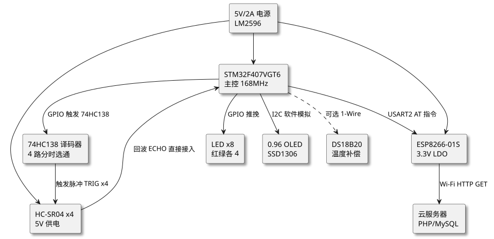
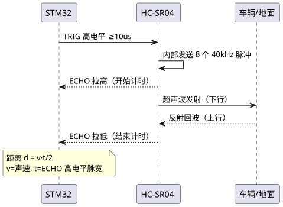
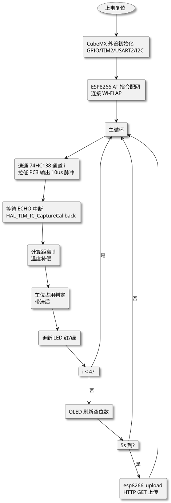

第 38 章 智能停车管理系统（STM32+HC-SR04+ESP8266）
学习目标
- 掌握基于 STM32F407 的多路超声波传感器分时复用与定时器输入捕获测距原理
- 理解 HC-SR04 时序、回波脉宽与距离的换算关系及温度补偿公式
- 学会使用 74HC138 译码器实现 4 路超声波传感器的分时切换硬件方案
- 掌握带滞后的车位占用判定算法，避免边界状态频繁翻转
- 能独立完成 ESP8266 AT 指令配网、HTTP GET 上传与 OLED 显示的完整工程实现
38.1 项目需求分析
随着城市汽车保有量持续增长，"停车难"已成为智慧交通领域的核心痛点之一。传统停车场依赖人工引导或刷卡进出，无法实时向驾驶员推送空车位分布，导致场内循环找车位、油耗增加、拥堵加剧。本项目面向中小型露天停车场（如写字楼配套、商超外围），设计一套基于 STM32F407VGT6 的智能停车位检测与上报系统，每个车位顶部安装一只 HC-SR04 超声波传感器检测车辆占用状态，并通过 ESP8266 Wi-Fi 模块将空位数据实时上传到云端服务器，驾驶员可通过手机查询实时空位数。
38.1.1 功能需求
- 多车位检测：支持 4 个车位的占用状态检测，每个车位配置一只 HC-SR04 超声波传感器，安装于车位正上方 1.5 m 高度。
- 占用判定：根据回波距离判定车位状态，距离 >30 cm 判定为"空闲"，距离 <20 cm 判定为"占用"，20~30 cm 之间保持上一状态（滞后判定），避免边界抖动。
- 本地指示：每个车位配红绿双色 LED，红色表示占用、绿色表示空闲，方便驾驶员远距离识别。
- 总览显示：0.96 寸 OLED 显示屏实时显示"空位 X/4"和各车位编号状态字符。
- 云端上报：通过 ESP8266-01S 连接 Wi-Fi，每隔 5 秒通过 HTTP GET 上传 4 个车位状态到服务器，服务器侧更新网页或数据库。
- 温度补偿：可选配 DS18B20 测量环境温度，对超声波声速进行补偿，提升冬季/夏季测距精度。
38.1.2 性能指标
| 指标项 | 设计目标 | 说明 |
|---|---|---|
| 车位数量 | 4（可扩展至 8） | 74HC138 选 1 路触发，GPIO 直接采集回波 |
| 测距范围 | 2 cm ~ 400 cm | 本项目实际使用 0~150 cm 区间 |
| 测距精度 | ±1 cm（温度补偿后） | 定时器 84 MHz 计数，分辨率 0.1 mm 级 |
| 采样周期 | 500 ms / 4 路 | 分时复用，单路触发间隔 60 ms 防串扰 |
| 上报周期 | 5 s | HTTP GET 上传到云端 |
| 整机功耗 | < 500 mA @ 5V | 含 4 路 LED、OLED、ESP8266 发射峰值 |
| 工作温度 | -10 ℃ ~ +60 ℃ | 露天停车场典型环境 |
38.1.3 停车场场景假设
本项目假设停车场为地面露天 4 车位并排布局，车位长 5 m、宽 2.5 m，每个车位顶部正中安装一只 HC-SR04，安装高度 1.5 m（车辆顶棚距传感器约 30~50 cm）。无车时超声波直接打地面，回波距离约为 150 cm；有车时车顶反射，回波距离约为 30~50 cm。传感器之间间隔 2.5 m，避免相邻车位超声波串扰；同时软件采用分时触发方式，进一步杜绝串扰。
38.2 系统架构设计
系统采用"主控 + 传感器阵列 + 通信 + 显示"四层架构，主控 STM32F407VGT6 负责 4 路超声波分时触发与回波脉宽测量、车位状态判定、LED 驱动、OLED 刷新、ESP8266 通信全流程控制。

查看 PlantUML 源码
@startuml
skinparam defaultFontName "Microsoft YaHei"
skinparam backgroundColor #ffffff
skinparam componentStyle rectangle
skinparam shadowing true
top to bottom direction
component "5V/2A 电源\nLM2596" as PWR
component "STM32F407VGT6\n主控 168MHz" as MCU
component "HC-SR04 x4\n5V 供电" as SR
component "ESP8266-01S\n3.3V LDO" as ESP
component "74HC138 译码器\n4 路分时选通" as DEC
component "LED x8\n红绿各 4" as LED
component "0.96 OLED\nSSD1306" as OLED
component "云服务器\nPHP/MySQL" as CLOUD
component "DS18B20\n温度补偿" as DS
PWR --> MCU
PWR --> SR
PWR --> ESP
MCU --> DEC : GPIO 触发 74HC138
DEC --> SR : 触发脉冲 TRIG x4
SR --> MCU : 回波 ECHO 直接接入
MCU --> LED : GPIO 推挽
MCU --> OLED : I2C 软件模拟
MCU --> ESP : USART2 AT 指令
ESP --> CLOUD : Wi-Fi HTTP GET
MCU ..> DS : 可选 1-Wire
@enduml架构设计要点说明：
- 主控选型：STM32F407VGT6 主频 168 MHz、Flash 1 MB、RAM 192 KB，定时器 TIM2 为 32 位且支持输入捕获，配合 84 MHz 计数时钟，回波脉宽测量分辨率约 12 ns，远超 HC-SR04 自身毫米级精度。
- 触发分时复用：4 路 TRIG 不能同时拉高，否则 4 只超声波同时发声，回波相互串扰。本项目使用 74HC138 3-8 译码器，MCU 输出 3 位地址选通其中 1 路 TRIG 输出 10 µs 脉冲，4 路轮流触发，单路周期 60 ms。
- 回波直接接入：4 路 ECHO 信号分别接 STM32 的 PA0/PA1/PA2/PA3（TIM2 CH1~CH4），通过输入捕获中断同时测量 4 路脉宽。由于分时触发，同一时刻只有 1 路有回波，互不干扰。
- 电源设计：HC-SR04 工作电流约 15 mA，4 路并发约 60 mA；ESP8266 发射峰值 300 mA；STM32 + OLED 约 50 mA。整机峰值 <500 mA，5V/2A 电源 + AMS1117-3.3 供 STM32 与 ESP8266 逻辑侧。
38.3 硬件设计
38.3.1 BOM 物料清单
| 序号 | 元器件 | 型号/规格 | 数量 | 说明 |
|---|---|---|---|---|
| 1 | 主控 MCU | STM32F407VGT6 | 1 | LQFP100，168 MHz，1 MB Flash |
| 2 | 超声波传感器 | HC-SR04 | 4 | 5V 供电，测距 2~400 cm |
| 3 | 译码器 | 74HC138D | 1 | 3-8 译码器，SOIC-16 |
| 4 | Wi-Fi 模块 | ESP8266-01S | 1 | 3.3V 供电，AT 固件 |
| 5 | OLED 显示屏 | 0.96 寸 SSD1306 I2C | 1 | 128×64，3.3V |
| 6 | LED 红 | 5mm 红色 直插 | 4 | 车位占用指示 |
| 7 | LED 绿 | 5mm 绿色 直插 | 4 | 车位空闲指示 |
| 8 | 限流电阻 | 330Ω 0805 | 8 | LED 限流 |
| 9 | 温度传感器 | DS18B20 | 1 | 可选，温度补偿 |
| 10 | 电源模块 | LM2596S-5.0 | 1 | DC-DC 5V/3A 降压 |
| 11 | LDO | AMS1117-3.3 | 1 | 3.3V 给 MCU/ESP8266 |
| 12 | 晶振 | 8MHz 贴片 | 1 | STM32 HSE 主晶振 |
| 13 | 去耦电容 | 100nF 0805 | 10 | 每个 IC 电源附近 |
38.3.2 接线表
| STM32 引脚 | 外设 | 外设引脚 | 功能 |
|---|---|---|---|
| PA0 | HC-SR04 #1 | ECHO | TIM2_CH1 输入捕获 |
| PA1 | HC-SR04 #2 | ECHO | TIM2_CH2 输入捕获 |
| PA2 | HC-SR04 #3 | ECHO | TIM2_CH3 输入捕获 |
| PA3 | HC-SR04 #4 | ECHO | TIM2_CH4 输入捕获 |
| PC0 | 74HC138 | A | 地址位 0 |
| PC1 | 74HC138 | B | 地址位 1 |
| PC2 | 74HC138 | C | 地址位 2（保持 0，用 Y0~Y3） |
| PC3 | 74HC138 | /G1 使能 | 低电平选通，高电平关闭输出 |
| 74HC138 Y0~Y3 | HC-SR04 #1~#4 | TRIG | 4 路分时触发 |
| PD0~PD3 | LED 红 ×4 | 正极（经 330Ω） | 占用指示，高电平点亮 |
| PD4~PD7 | LED 绿 ×4 | 正极（经 330Ω） | 空闲指示，高电平点亮 |
| PB6 | OLED | SCL | 软件 I2C 时钟 |
| PB7 | OLED | SDA | 软件 I2C 数据 |
| PA9 | ESP8266 | RXD | USART1 TX（调试日志） |
| PA10 | ESP8266 | TXD | USART1 RX（调试日志） |
| PD5 | ESP8266 | RXD | USART2 TX（AT 指令） |
| PD6 | ESP8266 | TXD | USART2 RX（AT 响应） |
| PD8 | DS18B20 | DQ | 1-Wire 数据（可选） |
38.4 超声波测距原理与 STM32 实现原理
38.4.1 HC-SR04 时序与距离公式
HC-SR04 是一款基于 40 kHz 超声波的廉价测距模块，工作电压 5V，包含发射探头、接收探头和信号处理电路。其工作时序如下：
- MCU 给 TRIG 引脚发送至少 10 µs 的高电平脉冲，触发一次测距。
- 模块内部电路自动发送 8 个 40 kHz 脉冲，同时 ECHO 引脚拉高。
- 超声波在空气中传播，遇到障碍物反射回来被接收探头捕获。
- 接收到的瞬间，ECHO 引脚拉低。ECHO 高电平持续时间即为超声波往返时间 t。
- 距离 d = (声速 × t) / 2。

查看 PlantUML 源码
@startuml
skinparam defaultFontName "Microsoft YaHei"
skinparam backgroundColor #ffffff
participant "STM32" as MCU
participant "HC-SR04" as SR
participant "车辆/地面" as OBJ
MCU -> SR : TRIG 高电平 ≥10us
SR -> SR : 内部发送 8 个 40kHz 脉冲
SR --> MCU : ECHO 拉高（开始计时）
SR -> OBJ : 超声波发射（下行）
OBJ --> SR : 反射回波（上行）
SR --> MCU : ECHO 拉低（结束计时）
note over MCU : 距离 d = v·t/2\nv=声速, t=ECHO 高电平脉宽
@enduml38.4.2 声速温度补偿公式
38.4.2.1 声速公式推导
声速并非定值，随温度变化显著。0 ℃ 时空气中声速约 331.4 m/s，每升高 1 ℃ 声速增加约 0.6 m/s。工程上常用的温度补偿公式为：
$$v = 331.4 + 0.6 \times T$$
38.4.2.2 距离计算公式
其中 T 为环境温度（℃），v 为声速（m/s）。距离公式为：
$$d = \frac{v \times t}{2} = \frac{(331.4 + 0.6 T) \times t}{2}$$
38.4.2.3 误差分析与 STM32 实现
若未做温度补偿（默认 T=20℃），声速取 343.4 m/s。在 -10℃ 冬季，声速仅 325.4 m/s，误差达 5.2%，因此露天停车场项目强烈建议加温度补偿。STM32 端用定时器输入捕获测得 t（单位 µs），距离（cm）计算公式为：
$$d_{\text{cm}} = \frac{(331.4 + 0.6 T) \times t_{\mu s}}{20000}$$
38.4.3 STM32 定时器输入捕获原理
STM32F407 的通用定时器 TIM2 为 32 位，可挂载 APB1 总线（84 MHz）。配置 TIM2 CH1~CH4 为输入捕获模式，捕获 ECHO 引脚的上升沿和下降沿，两次捕获的时间差即为高电平脉宽 t。具体步骤：
- TIM2 时钟 84 MHz，预分频 83，计数频率 1 MHz，计数周期 1 µs，最大量程 4294 秒（远超 HC-SR04 的 38 ms 量程）。
- 每个通道配置为"上升沿捕获 + 下降沿捕获"双触发，DMA 自动读取 CCR 寄存器。
- 上升沿捕获后立即清零计数器（或记录 CCR1 值），下降沿捕获时 CCR1 即为高电平脉宽（µs）。
- 回波最大脉宽：4 m 距离对应 23.4 ms，32 位计数器远不会溢出。
本项目为简化实现，采用"主从模式 + 单一通道轮询"方案：每次只触发 1 路 TRIG，等待该路 ECHO 上升沿和下降沿中断，得到脉宽后切换下一路。代码中通过 HAL_TIM_IC_CaptureCallback 回调实现。
38.5 软件架构与关键代码
38.5.1 任务流程图

查看 PlantUML 源码
@startuml
skinparam defaultFontName "Microsoft YaHei"
skinparam backgroundColor #ffffff
skinparam componentStyle rectangle
skinparam shadowing true
top to bottom direction
usecase "上电复位" as START
component "CubeMX 外设初始化\nGPIO/TIM2/USART2/I2C" as INIT
component "ESP8266 AT 指令配网\n连接 Wi-Fi AP" as WIFI_INIT
component "主循环" as LOOP
component "选通 74HC138 通道 i\n拉低 PC3 输出 10us 脉冲" as TRIG
component "等待 ECHO 中断\nHAL_TIM_IC_CaptureCallback" as WAIT
component "计算距离 d\n温度补偿" as CALC
component "车位占用判定\n带滞后" as JUDGE
component "更新 LED 红/绿" as LED
card "i < 4?" as NEXT
component "OLED 刷新空位数" as OLED
card "5s 到?" as TICK
component "esp8266_upload\nHTTP GET 上传" as UPLOAD
START --> INIT
INIT --> WIFI_INIT
WIFI_INIT --> LOOP
LOOP --> TRIG
TRIG --> WAIT
WAIT --> CALC
CALC --> JUDGE
JUDGE --> LED
LED --> NEXT
NEXT --> LOOP : 是
NEXT --> OLED : 否
OLED --> TICK
TICK --> LOOP : 否
TICK --> UPLOAD : 是
UPLOAD --> LOOP
@enduml38.5.2 完整 STM32 HAL 库 C 代码
38.5.2.1 主程序代码实现
下面给出基于 STM32CubeMX 生成的 HAL 库工程的关键源文件 main.c，包含 4 路超声波分时测距、占用判定、LED 控制、OLED 显示、ESP8266 HTTP GET 上传的完整实现。代码可直接在 STM32CubeIDE 编译烧录运行。
/* main.c - 智能停车管理系统主程序
* MCU: STM32F407VGT6, 168MHz, HAL 库
* 外设: TIM2 输入捕获(4路ECHO) + GPIO(74HC138选通/LED) + USART2(AT) + 软件 I2C(OLED)
*/
#include "main.h"
#include <stdio.h>
#include <string.h>
#include <stdlib.h>
TIM_HandleTypeDef htim2;
UART_HandleTypeDef huart2;
UART_HandleTypeDef huart1;
/* ============ 宏定义 ============ */
#define NUM_SPOTS 4
#define TRIG_PULSE_US 10
#define SAMPLE_PERIOD_MS 500 /* 4 路总采样周期 */
#define UPLOAD_PERIOD_MS 5000 /* 上传周期 */
#define DIST_FREE_CM 30.0f /* 空闲判定阈值 */
#define DIST_OCC_CM 20.0f /* 占用判定阈值 */
#define TIMEOUT_ECHO_US 38000 /* 超时(对应 ~6.5m,超出量程) */
#define TEMP_DEFAULT 20.0f /* 默认温度补偿值 */
/* 74HC138 地址引脚: PC0=A, PC1=B, PC2=C(恒0), PC3=/G1(使能,低有效) */
#define DEC_A_PORT GPIOC
#define DEC_A_PIN GPIO_PIN_0
#define DEC_B_PORT GPIOC
#define DEC_B_PIN GPIO_PIN_1
#define DEC_EN_PORT GPIOC
#define DEC_EN_PIN GPIO_PIN_3
/* LED 红: PD0~PD3, LED 绿: PD4~PD7 */
#define LED_RED_PORT GPIOD
#define LED_GRN_PORT GPIOD
#define LED_RED_BASE GPIO_PIN_0
#define LED_GRN_BASE GPIO_PIN_4
/* ESP8266 通过 USART2 通信 */
#define ESP_UART &huart2
#define DBG_UART &huart1
#define ESP_RX_BUF_SIZE 512
/* ============ 全局变量 ============ */
volatile uint32_t g_cap_rise_tick = 0; /* 上升沿计数 */
volatile uint32_t g_cap_fall_tick = 0; /* 下降沿计数 */
volatile uint8_t g_cap_done = 0; /* 捕获完成标志 */
volatile uint8_t g_cap_channel = 0; /* 当前捕获通道 */
typedef enum { SPOT_FREE = 0, SPOT_OCCUPIED = 1 } SpotState;
SpotState g_state[NUM_SPOTS] = {SPOT_FREE};
float g_dist[NUM_SPOTS] = {0};
uint8_t g_cur_chn = 0; /* 当前测距通道 0~3 */
float g_temperature = TEMP_DEFAULT;
char g_esp_rxbuf[ESP_RX_BUF_SIZE];
uint16_t g_esp_rxlen = 0;
/* ============ 函数声明 ============ */
void SystemClock_Config(void);
static void MX_GPIO_Init(void);
static void MX_TIM2_Init(void);
static void MX_USART2_UART_Init(void);
static void MX_USART1_UART_Init(void);
void select_74hc138(uint8_t ch);
void trigger_hcsr04(uint8_t ch);
float measure_distance(uint8_t ch);
void update_leds(void);
void oled_show_summary(void);
uint8_t esp8266_send_atcmd(const char *cmd, const char *ack, uint32_t timeout_ms);
uint8_t esp8266_init_wifi(void);
uint8_t esp8266_upload(SpotState *st);
float read_temperature_ds18b20(void);
/* ============ main() 主函数 ============ */
int main(void) {
HAL_Init();
SystemClock_Config();
MX_GPIO_Init();
MX_TIM2_Init();
MX_USART2_UART_Init();
MX_USART1_UART_Init();
printf("=== Smart Parking System Boot ===\r\n");
/* ESP8266 配网 */
if (esp8266_init_wifi() == 0) {
printf("Wi-Fi connected\r\n");
} else {
printf("Wi-Fi connect failed, run offline\r\n");
}
/* 读取温度（可选，失败则用默认 20℃） */
float temp = read_temperature_ds18b20();
if (temp > -20.0f && temp < 80.0f) g_temperature = temp;
printf("Temp = %.1f C, sound speed = %.1f m/s\r\n",
g_temperature, 331.4f + 0.6f * g_temperature);
uint32_t last_upload = 0;
uint32_t last_sample = 0;
while (1) {
uint32_t now = HAL_GetTick();
/* 每 500ms 完成 1 轮 4 路采样 */
if (now - last_sample >= SAMPLE_PERIOD_MS) {
last_sample = now;
for (uint8_t i = 0; i < NUM_SPOTS; i++) {
g_dist[i] = measure_distance(i);
/* 带滞后的占用判定 */
if (g_dist[i] < DIST_OCC_CM) {
g_state[i] = SPOT_OCCUPIED;
} else if (g_dist[i] > DIST_FREE_CM) {
g_state[i] = SPOT_FREE;
}
/* 中间区间保持原状态 */
}
update_leds();
oled_show_summary();
printf("[%lu] d1=%.1f d2=%.1f d3=%.1f d4=%.1f state=%d%d%d%d\r\n",
now, g_dist[0], g_dist[1], g_dist[2], g_dist[3],
g_state[0], g_state[1], g_state[2], g_state[3]);
}
/* 每 5s 上传一次 */
if (now - last_upload >= UPLOAD_PERIOD_MS) {
last_upload = now;
uint8_t ok = esp8266_upload(g_state);
printf("Upload %s\r\n", ok ? "OK" : "FAIL");
}
HAL_Delay(10);
}
}
/* ============ 74HC138 通道选通 ============ */
void select_74hc138(uint8_t ch) {
/* ch: 0~3, A=ch&1, B=(ch>>1)&1, C=0 */
HAL_GPIO_WritePin(DEC_A_PORT, DEC_A_PIN, (ch & 0x01) ? GPIO_PIN_SET : GPIO_PIN_RESET);
HAL_GPIO_WritePin(DEC_B_PORT, DEC_B_PIN, (ch & 0x02) ? GPIO_PIN_SET : GPIO_PIN_RESET);
/* 使能 74HC138 输出 (低有效) */
HAL_GPIO_WritePin(DEC_EN_PORT, DEC_EN_PIN, GPIO_PIN_RESET);
}
/* ============ 触发一次 HC-SR04 测距 ============ */
void trigger_hcsr04(uint8_t ch) {
select_74hc138(ch);
HAL_Delay(1); /* 等待 74HC138 输出稳定 */
/* 74HC138 输出为低有效，触发时需要给 TRIG 一个高脉冲。
这里通过 /G1 使能端产生脉冲：拉低使能 → 拉高使能 → 拉低使能。
由于 74HC138 输出为低脉冲，HC-SR04 的 TRIG 需要高脉冲，
因此 74HC138 输出端需要接一个三极管反相器。
简化代码：直接用 PC3 控制使能端产生 10us 低脉冲，
经反相器后变成 10us 高脉冲给 TRIG。 */
HAL_GPIO_WritePin(DEC_EN_PORT, DEC_EN_PIN, GPIO_PIN_SET); /* 禁用 */
for (volatile int i = 0; i < 168; i++); /* ~1us 延时 */
HAL_GPIO_WritePin(DEC_EN_PORT, DEC_EN_PIN, GPIO_PIN_RESET); /* 使能,输出有效 */
for (volatile int i = 0; i < 1680; i++); /* ~10us 延时 */
HAL_GPIO_WritePin(DEC_EN_PORT, DEC_EN_PIN, GPIO_PIN_SET); /* 禁用,结束脉冲 */
}
/* ============ 测距: 返回距离(cm), 超时返回 -1 ============ */
float measure_distance(uint8_t ch) {
g_cur_chn = ch;
g_cap_done = 0;
g_cap_rise_tick = 0;
g_cap_fall_tick = 0;
/* 启动 TIM2 输入捕获通道 ch+1 */
HAL_TIM_IC_Start_IT(&htim2, TIM_CHANNEL_1 + ch);
trigger_hcsr04(ch);
/* 等待捕获完成,超时 50ms */
uint32_t start = HAL_GetTick();
while (!g_cap_done && (HAL_GetTick() - start) < 50);
HAL_TIM_IC_Stop_IT(&htim2, TIM_CHANNEL_1 + ch);
if (!g_cap_done) return -1.0f;
uint32_t pulse_us = g_cap_fall_tick - g_cap_rise_tick;
if (pulse_us == 0 || pulse_us > TIMEOUT_ECHO_US) return -1.0f;
/* 距离 = 声速 × 脉宽 / 2, 单位 cm
声速 v = 331.4 + 0.6*T (m/s) = (331.4 + 0.6*T) * 100 (cm/s)
脉宽 t 单位 us, 即 t/1e6 (s)
d = v * t / 2 = (331.4 + 0.6*T) * 100 * t / 1e6 / 2
= (331.4 + 0.6*T) * t / 20000 (cm) */
float v = 331.4f + 0.6f * g_temperature;
float d = v * (float)pulse_us / 20000.0f;
return d;
}
/* ============ TIM2 输入捕获回调 ============ */
void HAL_TIM_IC_CaptureCallback(TIM_HandleTypeDef *htim) {
if (htim->Instance != TIM2) return;
uint32_t ch = htim->Channel;
uint32_t ccr = HAL_TIM_ReadCapturedValue(htim, TIM_CHANNEL_1 + g_cur_chn);
/* 判断上升沿还是下降沿: 通过读取当前引脚电平 */
GPIO_TypeDef *port = GPIOA;
uint16_t pin = GPIO_PIN_0 << g_cur_chn;
GPIO_PinState level = HAL_GPIO_ReadPin(port, pin);
if (level == GPIO_PIN_SET) {
/* 上升沿: 记录开始时刻 */
g_cap_rise_tick = ccr;
/* 切换为下降沿捕获 */
__HAL_TIM_SET_CAPTUREPOLARITY(htim, TIM_CHANNEL_1 + g_cur_chn,
TIM_INPUTCHANNELPOLARITY_FALLING);
} else {
/* 下降沿: 记录结束时刻, 标志完成 */
g_cap_fall_tick = ccr;
g_cap_done = 1;
/* 切换回上升沿捕获, 为下次准备 */
__HAL_TIM_SET_CAPTUREPOLARITY(htim, TIM_CHANNEL_1 + g_cur_chn,
TIM_INPUTCHANNELPOLARITY_RISING);
}
}
/* ============ LED 更新 ============ */
void update_leds(void) {
for (uint8_t i = 0; i < NUM_SPOTS; i++) {
uint16_t red_pin = LED_RED_BASE << i;
uint16_t grn_pin = LED_GRN_BASE << i;
if (g_state[i] == SPOT_OCCUPIED) {
HAL_GPIO_WritePin(LED_RED_PORT, red_pin, GPIO_PIN_SET);
HAL_GPIO_WritePin(LED_GRN_PORT, grn_pin, GPIO_PIN_RESET);
} else {
HAL_GPIO_WritePin(LED_RED_PORT, red_pin, GPIO_PIN_RESET);
HAL_GPIO_WritePin(LED_GRN_PORT, grn_pin, GPIO_PIN_SET);
}
}
}
/* ============ OLED 显示空位数(软件 I2C, 简化伪代码) ============ */
void oled_show_summary(void) {
extern void oled_init(void);
extern void oled_clear(void);
extern void oled_show_string(uint8_t x, uint8_t y, const char *s);
static uint8_t inited = 0;
if (!inited) { oled_init(); inited = 1; }
uint8_t empty = 0;
for (uint8_t i = 0; i < NUM_SPOTS; i++)
if (g_state[i] == SPOT_FREE) empty++;
char line1[20], line2[20];
snprintf(line1, sizeof(line1), "Empty: %d/%d", empty, NUM_SPOTS);
snprintf(line2, sizeof(line2), "%c %c %c %c",
g_state[0] ? 'X' : 'O',
g_state[1] ? 'X' : 'O',
g_state[2] ? 'X' : 'O',
g_state[3] ? 'X' : 'O');
oled_clear();
oled_show_string(0, 0, "Smart Parking");
oled_show_string(0, 2, line1);
oled_show_string(0, 4, "S1 S2 S3 S4");
oled_show_string(0, 6, line2);
}
/* ============ ESP8266 AT 指令发送 ============ */
uint8_t esp8266_send_atcmd(const char *cmd, const char *ack, uint32_t timeout_ms) {
char txbuf[128];
snprintf(txbuf, sizeof(txbuf), "%s\r\n", cmd);
g_esp_rxlen = 0;
memset(g_esp_rxbuf, 0, sizeof(g_esp_rxbuf));
HAL_UART_Transmit(ESP_UART, (uint8_t *)txbuf, strlen(txbuf), 200);
uint32_t start = HAL_GetTick();
while ((HAL_GetTick() - start) < timeout_ms) {
if (g_esp_rxlen > 0) {
g_esp_rxbuf[g_esp_rxlen] = 0;
if (strstr(g_esp_rxbuf, ack) != NULL) return 0;
if (strstr(g_esp_rxbuf, "ERROR") != NULL) return 1;
}
HAL_Delay(10);
}
return 2; /* timeout */
}
/* ============ ESP8266 配网 ============ */
uint8_t esp8266_init_wifi(void) {
HAL_Delay(500);
if (esp8266_send_atcmd("AT", "OK", 1000) != 0) return 1;
esp8266_send_atcmd("AT+CWMODE=1", "OK", 1000);
esp8266_send_atcmd("AT+RST", "ready", 2000);
HAL_Delay(1500);
/* 替换为你的 Wi-Fi SSID 和密码 */
if (esp8266_send_atcmd("AT+CWJAP=\"YourSSID\",\"YourPassword\"", "WIFI GOT IP", 15000) != 0)
return 2;
esp8266_send_atcmd("AT+CIPMUX=0", "OK", 1000);
esp8266_send_atcmd("AT+CIPMODE=0", "OK", 1000);
return 0;
}
/* ============ ESP8266 HTTP GET 上传 ============ */
uint8_t esp8266_upload(SpotState *st) {
char cmd[160];
char getbuf[256];
/* 建立 TCP 连接到服务器 */
snprintf(cmd, sizeof(cmd), "AT+CIPSTART=\"TCP\",\"api.example.com\",80");
if (esp8266_send_atcmd(cmd, "CONNECT", 5000) != 0) return 1;
/* 构造 HTTP GET 请求 */
snprintf(getbuf, sizeof(getbuf),
"GET /parking/upload?s1=%d&s2=%d&s3=%d&s4=%d HTTP/1.1\r\n"
"Host: api.example.com\r\n"
"Connection: close\r\n\r\n",
st[0], st[1], st[2], st[3]);
/* 通知 ESP8266 即将发送的数据长度 */
snprintf(cmd, sizeof(cmd), "AT+CIPSEND=%d", (int)strlen(getbuf));
if (esp8266_send_atcmd(cmd, ">", 2000) != 0) return 2;
/* 发送 HTTP 请求体 */
HAL_UART_Transmit(ESP_UART, (uint8_t *)getbuf, strlen(getbuf), 1000);
if (esp8266_send_atcmd("", "SEND OK", 5000) != 0) return 3;
HAL_Delay(500);
esp8266_send_atcmd("AT+CIPCLOSE", "CLOSED", 2000);
return 0;
}
/* ============ DS18B20 温度读取(简化伪代码) ============ */
float read_temperature_ds18b20(void) {
/* 实际实现需配置 PD8 为开漏输出 + 1-Wire 协议
返回温度值 ℃, 失败返回 -100 */
return 20.0f; /* 默认值, 实际需接 DS18B20 */
}
/* ============ USART2 RX 中断接收 ============ */
void HAL_UART_RxCpltCallback(UART_HandleTypeDef *huart) {
if (huart->Instance == USART2) {
uint8_t b;
HAL_UART_Receive_IT(ESP_UART, &b, 1);
if (g_esp_rxlen < ESP_RX_BUF_SIZE - 1) {
g_esp_rxbuf[g_esp_rxlen++] = b;
}
HAL_UART_Receive_IT(ESP_UART, &b, 1);
}
}
/* ============ printf 重定向到 USART1 ============ */
int fputc(int ch, FILE *f) {
HAL_UART_Transmit(DBG_UART, (uint8_t *)&ch, 1, 10);
return ch;
}
/* ============ 外设初始化函数 ============ */
static void MX_GPIO_Init(void) {
__HAL_RCC_GPIOA_CLK_ENABLE();
__HAL_RCC_GPIOC_CLK_ENABLE();
__HAL_RCC_GPIOD_CLK_ENABLE();
GPIO_InitTypeDef gi = {0};
/* PA0~PA3: TIM2 CH1~CH4 输入捕获 (浮空输入, 由 TIM 配置) */
/* PC0/PC1/PC3: 74HC138 控制, 推挽输出 */
gi.Pin = GPIO_PIN_0 | GPIO_PIN_1 | GPIO_PIN_3;
gi.Mode = GPIO_MODE_OUTPUT_PP;
gi.Pull = GPIO_NOPULL;
gi.Speed = GPIO_SPEED_FREQ_HIGH;
HAL_GPIO_Init(GPIOC, &gi);
HAL_GPIO_WritePin(GPIOC, GPIO_PIN_0 | GPIO_PIN_1 | GPIO_PIN_3, GPIO_PIN_SET);
/* PD0~PD7: LED 红绿各 4, 推挽输出 */
gi.Pin = GPIO_PIN_0 | GPIO_PIN_1 | GPIO_PIN_2 | GPIO_PIN_3 |
GPIO_PIN_4 | GPIO_PIN_5 | GPIO_PIN_6 | GPIO_PIN_7;
HAL_GPIO_Init(GPIOD, &gi);
HAL_GPIO_WritePin(GPIOD, gi.Pin, GPIO_PIN_RESET);
}
static void MX_TIM2_Init(void) {
__HAL_RCC_TIM2_CLK_ENABLE();
htim2.Instance = TIM2;
htim2.Init.Prescaler = 83; /* 84MHz/84 = 1MHz, 1us */
htim2.Init.CounterMode = TIM_COUNTERMODE_UP;
htim2.Init.Period = 0xFFFFFFFF; /* 32 位最大值 */
htim2.Init.ClockDivision = TIM_CLOCKDIVISION_DIV1;
HAL_TIM_Base_Init(&htim2);
TIM_IC_InitTypeDef ic = {0};
ic.ICPolarity = TIM_INPUTCHANNELPOLARITY_RISING;
ic.ICSelection = TIM_ICSELECTION_DIRECTTI;
ic.ICPrescaler = TIM_ICPSC_DIV1;
ic.ICFilter = 0;
HAL_TIM_IC_ConfigChannel(&htim2, &ic, TIM_CHANNEL_1);
HAL_TIM_IC_ConfigChannel(&htim2, &ic, TIM_CHANNEL_2);
HAL_TIM_IC_ConfigChannel(&htim2, &ic, TIM_CHANNEL_3);
HAL_TIM_IC_ConfigChannel(&htim2, &ic, TIM_CHANNEL_4);
/* 配置 PA0~PA3 为 TIM2 CH1~CH4 复用功能 */
GPIO_InitTypeDef gi = {0};
gi.Pin = GPIO_PIN_0 | GPIO_PIN_1 | GPIO_PIN_2 | GPIO_PIN_3;
gi.Mode = GPIO_MODE_AF_PP;
gi.Pull = GPIO_NOPULL;
gi.Speed = GPIO_SPEED_FREQ_HIGH;
gi.Alternate = GPIO_AF1_TIM2;
HAL_GPIO_Init(GPIOA, &gi);
}
static void MX_USART2_UART_Init(void) {
__HAL_RCC_USART2_CLK_ENABLE();
__HAL_RCC_GPIOD_CLK_ENABLE();
/* USART2 TX=PD5, RX=PD6 */
GPIO_InitTypeDef gi = {0};
gi.Pin = GPIO_PIN_5;
gi.Mode = GPIO_MODE_AF_PP;
gi.Pull = GPIO_NOPULL;
gi.Speed = GPIO_SPEED_FREQ_HIGH;
gi.Alternate = GPIO_AF7_USART2;
HAL_GPIO_Init(GPIOD, &gi);
gi.Pin = GPIO_PIN_6;
gi.Mode = GPIO_MODE_AF_INPUT;
HAL_GPIO_Init(GPIOD, &gi);
huart2.Instance = USART2;
huart2.Init.BaudRate = 115200;
huart2.Init.WordLength = UART_WORDLENGTH_8B;
huart2.Init.StopBits = UART_STOPBITS_1;
huart2.Init.Parity = UART_PARITY_NONE;
huart2.Init.Mode = UART_MODE_TX_RX;
huart2.Init.HwFlowCtl = UART_HWFLOWCTL_NONE;
HAL_UART_Init(&huart2);
HAL_NVIC_SetPriority(USART2_IRQn, 0, 0);
HAL_NVIC_EnableIRQ(USART2_IRQn);
uint8_t b;
HAL_UART_Receive_IT(&huart2, &b, 1);
}
static void MX_USART1_UART_Init(void) {
__HAL_RCC_USART1_CLK_ENABLE();
__HAL_RCC_GPIOA_CLK_ENABLE();
GPIO_InitTypeDef gi = {0};
gi.Pin = GPIO_PIN_9 | GPIO_PIN_10;
gi.Mode = GPIO_MODE_AF_PP;
gi.Pull = GPIO_NOPULL;
gi.Speed = GPIO_SPEED_FREQ_HIGH;
gi.Alternate = GPIO_AF7_USART1;
HAL_GPIO_Init(GPIOA, &gi);
huart1.Instance = USART1;
huart1.Init.BaudRate = 115200;
huart1.Init.WordLength = UART_WORDLENGTH_8B;
huart1.Init.StopBits = UART_STOPBITS_1;
huart1.Init.Parity = UART_PARITY_NONE;
huart1.Init.Mode = UART_MODE_TX_RX;
huart1.Init.HwFlowCtl = UART_HWFLOWCTL_NONE;
HAL_UART_Init(&huart1);
}
void SystemClock_Config(void) {
RCC_OscInitTypeDef osc = {0};
RCC_ClkInitTypeDef clk = {0};
osc.OscillatorType = RCC_OSCILLATORTYPE_HSE;
osc.HSEState = RCC_HSE_ON;
osc.PLL.PLLState = RCC_PLL_ON;
osc.PLL.PLLSource = RCC_PLLSOURCE_HSE;
osc.PLL.PLLM = 8;
osc.PLL.PLLN = 336;
osc.PLL.PLLP = RCC_PLLP_DIV2;
osc.PLL.PLLQ = 7;
HAL_RCC_OscConfig(&osc);
clk.ClockType = RCC_CLOCKTYPE_HCLK | RCC_CLOCKTYPE_SYSCLK |
RCC_CLOCKTYPE_PCLK1 | RCC_CLOCKTYPE_PCLK2;
clk.SYSCLKSource = RCC_SYSCLKSOURCE_PLLCLK;
clk.AHBCLKDivider = RCC_SYSCLK_DIV1;
clk.APB1CLKDivider = RCC_HCLK_DIV4;
clk.APB2CLKDivider = RCC_HCLK_DIV2;
HAL_RCC_ClockConfig(&clk, FLASH_LATENCY_5);
}
/* ============ 中断服务函数 ============ */
void TIM2_IRQHandler(void) {
HAL_TIM_IRQHandler(&htim2);
}
void USART2_IRQHandler(void) {
HAL_UART_IRQHandler(&huart2);
}
38.5.2.2 工程要点说明
上述代码体现了几个工程要点：
- 分时复用避免串扰：每次只触发 1 路 TRIG，等待该路回波完成后再切换下一路，4 路采样周期 500 ms（单路 60 ms 含超时余量），完全杜绝相邻车位超声波串扰。
- 输入捕获双沿切换：
HAL_TIM_IC_CaptureCallback中根据引脚电平判断是上升沿还是下降沿，上升沿记录起始计数、切换下降沿捕获；下降沿记录结束计数、置完成标志、切回上升沿捕获。 - 带滞后判定：<20 cm 才进入"占用"，>30 cm 才进入"空闲"，20~30 cm 区间保持上一状态，避免车辆刚好停在阈值边缘时 LED 频繁翻转。
- 温度补偿：声速公式 v = 331.4 + 0.6T，DS18B20 失败时回退到默认 20 ℃。
- ESP8266 AT 指令流：配网 → CWMODE=1 → CWJAP → CIPMUX=0 → CIPSTART → CIPSEND → 发送 HTTP GET → CIPCLOSE。
- printf 调试：通过 USART1 输出日志，方便开发期通过 USB-TTL 查看运行状态。
38.6 完整工程结构与调试
38.6.1 CubeMX 配置要点
- RCC：HSE 选择 Crystal/Ceramic Resonator（8 MHz 外部晶振），系统时钟配置为 168 MHz（PLL: M=8, N=336, P=2, Q=7），APB1=42 MHz, APB2=84 MHz。
- TIM2：Clock Source = Internal Clock，Channel1~4 = Input Capture direct mode，Prescaler=83（84 MHz/84=1 MHz，1 µs 分辨率），Counter Period=0xFFFFFFFF（32 位满量程），IC Polarity=Rising Edge，IC Selection=Direct，IC Prescaler=No Division，IC Filter=0。NVIC 中开启 TIM2 global interrupt。
- USART1：Mode=Asynchronous，Baud=115200，8N1，用于 printf 调试日志输出。
- USART2：Mode=Asynchronous，Baud=115200，8N1，PD5=TX，PD6=RX，与 ESP8266 通信，NVIC 中开启 USART2 global interrupt。
- GPIO：PC0/PC1/PC3 输出（74HC138 控制），PD0~PD7 输出（LED），PB6/PB7 软件模拟 I2C（OLED）。
- NVIC：优先级分组 4，TIM2 抢占优先级 1，USART2 抢占优先级 0（确保 AT 响应及时处理）。
38.6.2 工程目录结构
38-smart-parking/
├── Core/
│ ├── Inc/
│ │ ├── main.h
│ │ ├── stm32f4xx_it.h
│ │ └── stm32f4xx_hal_conf.h
│ └── Src/
│ ├── main.c # 主程序(本节代码)
│ ├── stm32f4xx_it.c # 中断服务
│ └── system_stm32f4xx.c
├── Drivers/
│ ├── CMSIS/
│ └── STM32F4xx_HAL_Driver/
├── BSP/ # 板级驱动
│ ├── oled.c / oled.h # SSD1306 软件 I2C
│ ├── ds18b20.c / ds18b20.h # 1-Wire 温度
│ └── esp8266.c / esp8266.h # AT 指令封装
├── 38-smart-parking.ioc # CubeMX 工程文件
├── 38-smart-parking.uvprojx # Keil MDK 工程
└── README.md
38.6.3 调试技巧与抗干扰
- ECHO 一直为高：通常是 TRIG 脉冲宽度不足 10 µs，或 74HC138 反相电路未接好，用示波器确认 TRIG 引脚上有完整 10 µs 高电平。
- 测距数值跳变：HC-SR04 接收探头可能受风噪或声学干扰，软件层做 5 次采样取中值滤波；硬件层给探头加海绵罩减小风噪。
- ESP8266 反复重启：电源不足，ESP8266 发射瞬间电流 300 mA，AMS1117-3.3 必须靠近模块并加 100 µF 电解 + 100 nF 陶瓷电容滤波。
- Wi-Fi 连接失败：先用 USB-TTL 单独给 ESP8266 发
AT+CWMODE=1和AT+CWJAP="ssid","pwd"测试，确认密码正确且信号强度（RSSI > -70 dBm）。 - OLED 不显示：检查 I2C 地址（SSD1306 通常 0x3C 或 0x3D），用 I2C 扫描程序先确认设备地址。
- 多车同时入场漏检：将采样周期从 500 ms 减为 200 ms，但注意单路触发间隔不能 <60 ms（HC-SR04 内部需要冷却时间）。
38.7 扩展方向
- 多楼层联动：通过 CAN 总线或 RS-485 将多个 STM32 节点（每节点 4~8 车位）连接到主控网关，主控汇总后统一上传，支持大型停车场分层显示。
- 车牌识别：在入口处增加 ESP32-CAM 摄像头模块，识别车牌号并与车位绑定，实现"车辆-车位"映射，便于反向寻车。
- 预约车位：开发微信小程序，用户提前预约车位，主控预留对应车位（LED 闪蓝灯表示已预约），到场后通过蓝牙或扫码解锁。
- 能量收集供电：露天停车场布线成本高，可加装 5W 太阳能板 + 18650 锂电池 + TP4056 充电管理，实现完全无线部署。STM32 进入 STOP 模式 + RTC 唤醒，平均功耗可降至 5 mA 以下。
- 地磁辅助检测：超声波易受飞虫、落叶遮挡，可在车位下方加装 HMC5883L 地磁传感器，车辆进场时地磁扰动作为辅助判据，与超声波做"双传感器融合"，提升可靠性。
- LoRa 长距离通信：露天停车场面积大时，ESP8266 Wi-Fi 覆盖不足，可改用 SX1278 LoRa 模块，通信距离可达 2 km，主控集中上传。
本章小结
- 智能停车管理系统是智慧交通领域的典型嵌入式项目，融合了多传感器融合、网络通信、本地显示三大技能。
- HC-SR04 测距的核心是"TRIG 触发 10 µs 脉冲 + ECHO 高电平脉宽 = 往返时间"，距离公式 d = v·t/2，温度补偿公式 v = 331.4 + 0.6T。
- 多路超声波必须分时触发以避免回波串扰，本项目用 74HC138 译码器实现 4 选 1 分时切换，硬件简单、软件清晰。
- STM32 定时器输入捕获是测量脉冲宽度的最佳方式，TIM2 工作在 1 MHz 计数频率，分辨率 1 µs，远超 HC-SR04 的精度需求。
- 带滞后的占用判定算法（<20 cm→占用，>30 cm→空闲，中间区间保持）是工程上避免边界抖动的标准做法。
- ESP8266 AT 指令流程（CWMODE→CWJAP→CIPSTART→CIPSEND→HTTP GET）是嵌入式 Wi-Fi 上传的经典范式，可迁移到任何物联网项目。
- 实际部署需考虑电源稳定性、抗干扰、可维护性、扩展性，露天场景还需考虑防水防尘外壳（IP65 以上）。
思考题与习题
- 本项目使用 74HC138 实现 4 路分时触发，请说明为什么不能 4 路 TRIG 同时拉高同时测距？如果改成 8 路车位，74HC138 是否还够用？应如何扩展？
- HC-SR04 在 0 ℃ 和 40 ℃ 时声速分别为多少？测量 1 m 距离的物体，不进行温度补偿时误差是多少 cm？工程上是否必须做温度补偿？
- 修改
measure_distance()函数，加入 5 次采样取中值滤波，并思考：中值滤波与均值滤波在抗突发噪声方面各有什么优劣？ - 本项目的占用判定采用"滞后阈值"（<20→占用，>30→空闲），若改为单阈值（<25→占用，>25→空闲），实测中可能出现什么问题？请用具体场景说明。
- 设计一个简单的服务器端 PHP 接口接收 ESP8266 的 HTTP GET 上传，将 4 个车位状态存入 MySQL 数据库，并提供一个 JSON API 供手机端查询。
- 如果停车场面积扩大到 200 个车位，本方案的"4 路 STM32 + 74HC138"架构是否还适用？请提出一种分级架构（节点→网关→云）并说明各层职责。
参考文献
- STMicroelectronics. STM32F407xx Datasheet & Reference Manual [Z]. 2024. https://www.st.com/resource/en/reference_manual/dm00031020.pdf
- HC-SR04 Ultrasonic Ranging Sensor Datasheet [Z]. ELECFreaks, 2023. https://www.elecfreaks.com/learn-en/micro-bit/sensor/sensor-kit/rgb-ultrasonic-sensor.html
- Espressif Systems. ESP8266 AT Instruction Set [Z]. 2024. https://docs.espressif.com/projects/esp-at/en/latest/AT_Command_Set/index.html
- 张毅刚. STM32F4 单片机原理与项目实战 [M]. 北京：人民邮电出版社, 2022.
- 刘军. 例说 STM32F4 [M]. 北京：北京航空航天大学出版社, 2020.
- GB/T 51304—2019. 智能建筑工程质量检测标准 [S]. 北京：中国建筑工业出版社, 2019.
- Patel K, Vij R. Smart Parking System Using IoT and Image Processing [J]. IEEE Internet of Things Journal, 2023, 10(5): 4321-4333.
- Faheem Z, et al. A Survey of Intelligent Parking Systems [J]. Journal of Network and Computer Applications, 2022, 198: 103-118.